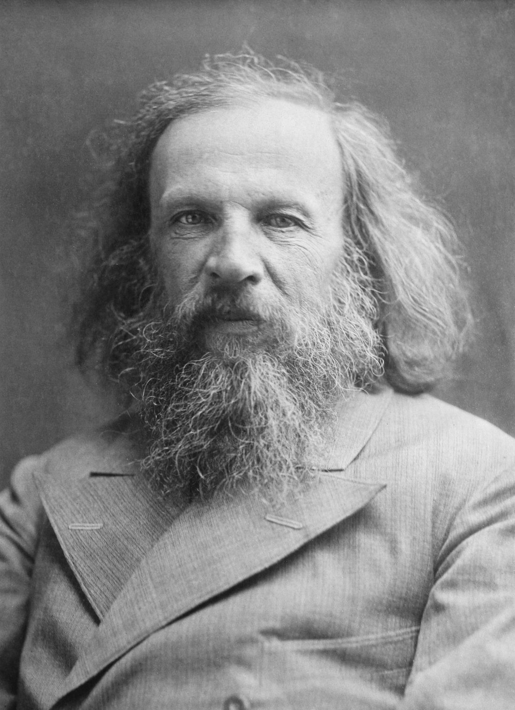

德米特里·门捷列夫（1834—1907），俄国人。他研究化学，却做了一件像图书馆管理员的事：把元素按规律归档。
1869 年，他把当时已知的元素按原子量排成行列，发现性质随位置周期变化，于是画出了第一张元素周期表。
他更大胆地留下空格，预言“这里应该还有一种元素”，并说清了它大概长什么样。几年后，镓、锗真的被找到，和他写的几乎一模一样。
面向中学生的科普小站：按时间顺序讲故事，把难词讲成人话。每个核心概念都能点开弹窗看通俗解释；想深入就读“详解页”；想动手就玩“实验”；不确定哪个词什么意思，去词典里搜。